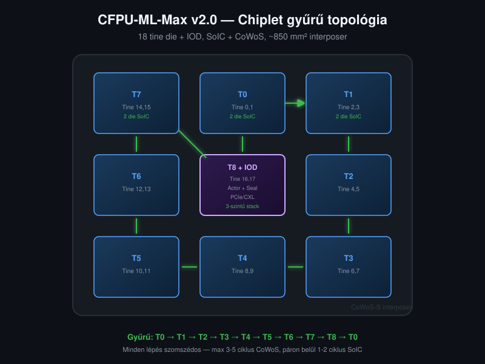
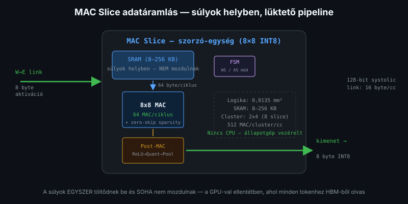
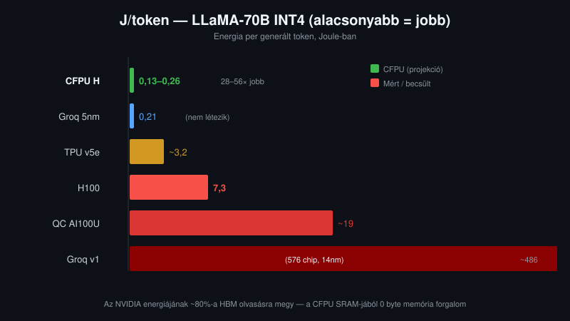

Mi lenne, ha egy AI chip 6–58× kevesebb energiával tudna tokent generálni?
Mi lenne, ha egy AI chip 6–58× kevesebb energiával tudna tokent generálni, mint az NVIDIA H100? Az AI-val közösen tervezett CFPU-ML-Max v2.0 (Cognitive Fabric Processing Unit — ML inference-re optimalizált chiplet architektúra) pontosan ezt ígéri. Nem elméleti TOPS (Tera Operations Per Second — másodpercenkénti billió művelet) számok — hanem J/token (Joule per generált token — mennyi energia kell egyetlen szó előállításához), a valódi metrika, amelyet a produkciós üzemeltetés költsége határoz meg.
A v2.0 verziót a Claude Opus 4.6 (1M kontextus) AI-val közösen terveztük: a mátrix-szorzás adatfolyamának analízisétől a chiplet topológia optimalizálásáig, minden döntést közös kutatás támasztott alá.
CFPU — Cognitive Fabric Processing Unit: a CLI-CPU processzorcsalád neve
Die / tine die — szilícium lapka; a tine die egyetlen ~85 mm²-es építőelem
Chiplet — több kis die egyetlen csomagban (vs. egyetlen nagy monolitikus die)
SRAM — Static RAM: a chipen belüli gyors memória (nincs frissítés, állandóan tartja az adatot)
HBM — High Bandwidth Memory: külső nagy kapacitású memória (GPU-k használják)
MAC — Multiply-Accumulate: szorzó-összeadó egység (a neurális hálók alapművelete)
MAC Slice — egy 8×8-as MAC tömb + vezérlő + memória: a CFPU-ML legkisebb compute egysége (slice = szelet)
TOPS — Tera Operations Per Second: másodpercenkénti billió művelet
J/token — Joule per token: mennyi energia kell egyetlen szó előállításához
Systolic — „lüktető": az adat ütemezetten, szomszédról szomszédra halad
Weight-stationary — a súlyok helyben maradnak, csak az adat áramlik
KV cache — Key-Value cache: korábbi tokenek feldolgozásának tárolt eredménye
SoIC — System on Integrated Chips: 3D chiplet összekapcsolás (die-ok egymásra)
CoWoS — Chip on Wafer on Substrate: 2D chiplet interposer (die-ok egymás mellé)
IOD — I/O Die: a vezérlő és kommunikációs die (Actor Core + Seal Core + I/O)
FSM — Finite State Machine: állapotgép (egyszerű hardveres vezérlő, CPU nélkül)
Actor Core — általános célú programozható mag (teljes .NET CIL), a CFPU-ML-ben a nem-MAC műveleteket végzi (LayerNorm, Softmax)
Seal Core — kódhitelesítő mag: kriptográfiai verifikááció minden betöltött kódra (SHA-256, WOTS+)
PHY — Physical Layer: a fizikai réteg áramköre, amely a chipen kívüli kommunikációt (PCIe, CXL) biztosítja
Yield — gyártási hozam: a jó chipek aránya a gyártottakból
A vízió: SRAM-only, súlyok helyben
Az NVIDIA üzemeltetési költségét a memória sávszélesség határozza meg. Az H100 1 979 TOPS-t kínál papíron, de egyetlen felhasználó kiszólgálásakor (batch=1 decode) a HBM3 sávszélesség (3 350 GB/s) korlátozza a sebességet — a TOPS kihasználtság akár 5-25%-ra eshet. Nagy batch mérettel (64-256 egyidejű kérés) ez javul 60-80%-ra, mert egy HBM olvasás több tokent szolgál ki egyszerre.
A CFPU-ML-Max radikálisan más utat választ, a CFPU shared-nothing tervezési modelljét követve: nincs külső memória, nincs megosztott állapot. A teljes modell (súlyok + KV cache (Key-Value cache — a korábbi tokenek feldolgozásának tárolt eredménye) + aktivációk) az on-chip SRAM-ban (Static RAM — a chipen belüli, gyors, statikus memória) él. Nincs DRAM, nincs HBM (High Bandwidth Memory — a GPU-k külső memóriája), nincs memória sávszélesség korlát. A MAC-ok (Multiply-Accumulate — szorzó-összeadó egységek) minden ciklusban kapnak adatot — nem várnak.
Az architektúra weight-stationary (súly-helyben-maradó): a súlyok helyben maradnak az SRAM-ban, az aktivációk áramlanak keresztül a systolic hálózaton (systolic = „lüktető" — az adat ütemezetten, szomszédról szomszédra halad, mint a szívverés). Ez minimális adatmozgatást jelent — és minimális energiát.
Chiplet: 18 tine die, gyűrű topológia
A monolitikus nagy die (szilícium lapka) kora lejárt. Az H100 814 mm²-es die-jának gyártási hozama (yield) 5nm-en mindössze ~22% — négy lapkából átlagosan csak egy használható. A CFPU-ML-Max ehelyett egyetlen 85 mm²-es tine die-t tervez (5nm, ~94% yield), és ebből épít termékcsaládot.
A referencia csomag: 18 tine die, 9 stack (páronként 2 tine, SoIC (System on Integrated Chips — 3D chiplet összekapcsolás) hybrid bond-dal), 3×3 gyűrűben elhelyezve a CoWoS (Chip on Wafer on Substrate — 2D chiplet interposer) interposer-en. A középső stack három szintű: 2 tine + IOD (I/O Die — a vezérlő és kommunikációs die) alul, amely az Actor Core-okat, Seal Core-t (kódhitelesítés) és az I/O PHY-t (külső csatlakozás) tartalmazza.
Felülnézet (CoWoS interposer):
[S7] [S0] [S1] S = Stack (2 tine, SoIC)
T14,15 T0,1 T2,3 T = Tine die
[S6] [S8+IOD] [S2] S8 = középső stack:
T12,13 T16,17 T4,5 felül: Tine 17
+Actor közép: Tine 16
+Seal alul: IOD
+I/O
[S5] [S4] [S3]
T10,11 T8,9 T6,7
Gyűrű: S0 → S1 → S2 → S3 → S4 → S5 → S6 → S7 → S8 → S0
A SoIC hybrid bond páron belül (<10 μm pitch) a két tine határa láthatatlan: 1–2 ciklus latencia, a systolic pipeline úgy folyik át, mintha egyetlen die lenne. A CoWoS interposer-en a szomszédos párok között 3–5 ciklus — a teljes inference idejének <0,07%-a.
Minden tine belsejében a MAC sorok szerpentin szervezésűek (páros sor →, páratlan sor ←), FFN és Attention rétegek váltakozva — az adat természetesen kígyózik végig a chipen. A gyűrű topológiában az IOD középen ül, minden stack-kel szomszédos — max 1 CoWoS hop bármely irányba.
MAC Slice: 8×8 INT8, FSM-vezérelt

Mi történik, ha kiszedjük a processzort a processzorból? A CFPU-ML-Max alapegysége a MAC Slice (szorzó-szelet): 8×8-as INT8 szorzótömb, amelyben nincs CPU, nincs programkód-végrehajtó. Egy minimális állapotgép (FSM) vezérli — ennek két módja van:
- Weight-stationary (WS) — FFN rétegekhez: a súlyok helyben maradnak, az aktivációk áramlanak
- Activation-stationary (AS) — Attention Q×KT és scores×V műveletekhez: az aktiváció marad helyben
A dual-mode FSM egyetlen bit átváltásával megoldja, amit más architektúrák külön hardverrel kezelnek. Az Attention kihasználtság 50%-ról 65–78%-ra javul.
Zero-skip sparsity
Ha a súly == 0, a MAC kihagyja a szorzást (~500 GE, ~2% terület). Structured (2:4) és unstructured sparsity is támogatott. Effektív 1,5–2× gyorsulás tipikus modelleken — nulla extra memória-sávszélesség igény mellett.
Post-MAC pipeline
A MAC kimenete után azonnal, hardverben végrehajtódik:
- ReLU — negatív értékek nullázása (~300 GE)
- INT32→INT8 quantize — visszakvantálás (~1 200 GE)
- 2×2 Max-Pool — négy értékből a maximum (~400 GE)
Összesen 2 500 GE — szinte nulla területköltség, de a kimeneti forgalmat 16×-osra csökkenti. A hálózat terhe minimális.
J/token: a valódi metrika

A marketingben a TOPS számít. A valóságban a J/token (Joule per generált token) határozza meg az üzemeltetési költséget. Nem az számít, hány műveletet tud a chip másodpercenként — hanem az, hogy egy token generálása mennyi energiába kerül.
Az NVIDIA H100 hatalmas TOPS-t kínál, de a HBM3 memória fal miatt LLM decode-nál a tényleges kihasználtság alacsony. Az eredmény: 1,87 J/token (LLaMA-70B, 100 user, TensorRT-LLM).
| Szcénárió (LLaMA-70B) | CFPU J/token | NVIDIA J/token | CFPU előny |
|---|---|---|---|
| Batch=1 (latencia) | 0,05 | 1,75 | 35× |
| 100 user | 0,70 | 1,87 | 2,7× |
| 1 000 user | 0,32 | 1,87 | 5,8× |
| 10 000 user | 0,32 | 1,87 | 5,8× |
A CFPU MINDEN szcénárióban nyer: 2,7–35× jobb J/token és 31–68× olcsóbb chipár.
Miért ilyen nagy a különbség? Az NVIDIA H100 esetén az energiafogyasztás jelentős része a HBM3 memória táplálására megy — különösen kis batch méreteknél (1-10 egyidejű kérés), ahol a súlyokat tokenenként újra ki kell olvasni. A CFPU-ML-Max SRAM-only — nincs DRAM refresh, nincs memória controller overhead. Nagy batch-nél (100+ kérés) az NVIDIA hatékonysága javul, de a CFPU még így is előnyben marad, mert a súlyok soha nem mozdulnak.
Produkciós üzemeltetés: 1 000 egyidejű user
Képzeljünk el egy startup-ot, amelynek ezer felhasználója egyszerre kérdez egy LLaMA-70B modellt. 30 token másodpercenként felhasználónként — összesen 30 000 tok/s rendszer-átbocsátás. Melyik architektúra bírja ezt hatékonyabban?
| NVIDIA (80 db H100 GPU) | CFPU H (32 chip) | |
|---|---|---|
| Memória igény | 115 GB | 115 GB |
| Chipek száma | 80 GPU (10 node) | 32 chip |
| Össz TDP | 56 000W | 9 600W |
| J/token | 1,87 | 0,32 |
| Gyártási költség | ~$265K (80×$3,3K) | ~$35K (32×$1,1K) |
A CFPU 32 chippel oldja meg, amihez egy NVIDIA rendszernek 80 darab H100 GPU kell. 5,8× jobb J/token, határozott töredékébe kerülő CAPEX. A különbség a 9 600W vs 56 000W fogyasztásban érzékelhető a legjobban — ez éves szinten százmilliós különbség az áramköltségben.
A LLaMA-70B GQA-t (Grouped Query Attention) használ: 8 KV head (nem 64). Egy user KV cache-e 500 token kontextusra mindössze 80 MB. 1 000 user = 80 GB KV cache — de a KV cache ideiglenes (~2 másodperc), így az egyszerre aktív KV töredéke ennek. A valós üzemeltetésben a memória nem a KV cache-től robban — a compute a valódi korlát.
Az AI mint társtervező
Hogyan tervezünk processzort 2026-ban? Nem egyedül. A v2.0 architektúra egy ember és egy AI közös munkája: a Claude Opus 4.6 (1M token kontextus, Anthropic) mint társtervező aktív részt vett minden döntésben:
- KV cache GQA számolás — az AI mutatta ki, hogy a GQA-val a KV cache töredéke a naiv becslésnek, így a multi-chip igény sokkal alacsonyabb
- Chiplet yield optimalizálás — közös elemzés: miért 85 mm² az optimum, hogyan skálázódik a yield vs die méret
- Groq/TPU/Qualcomm összehasonlítás — az AI segített összeállítani a versenytárs mátrixot és azonosítani a CFPU valódi differenciátorát
- Hibák felismerése — két kritikus javítás az AI-tól: (1) eDRAM nem létezik 5nm-en — az eredeti terv eDRAM-ot feltételezett, ami 14nm óta nem gyártott; (2) az Attention nem weight-stationary — a Q×KT mindkét oldala aktiváció, nem súly, ezért kellett a dual-mode FSM
Ez nem AI által generált marketing. Ez AI által validált mérnöki döntéshozatal: hipotézis → AI kritika → javítás → végleges döntés. A teljes tervezési folyamat publikusan követhető a GitHub repóban.
Nyílt forráskód
A CLI-CPU projekt teljes egészében nyílt forráskódú. A chiplet architektúra, a tervezési döntések és az AI-val közös kutatás dokumentuma publikusan elérhető.